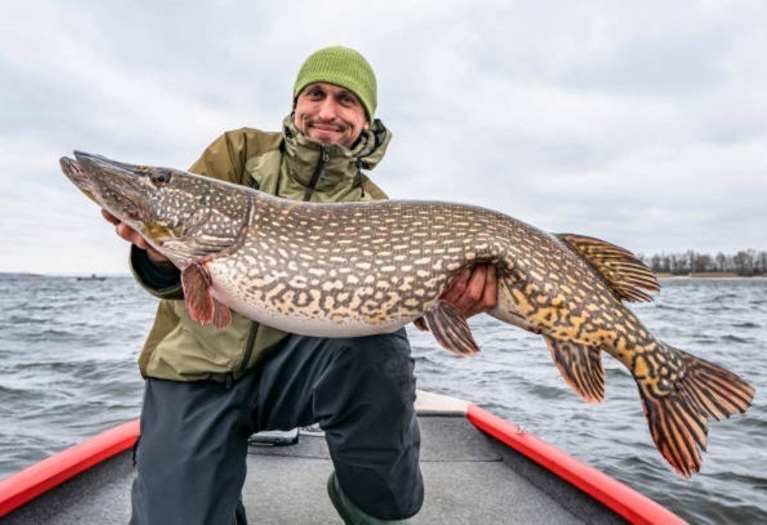

Chasing River Monsters in Poltava
Welcome to my personal corner of the web! For years, my absolute favorite escape from daily life has been grabbing my favorite spinning rod and hitting the waters in and around Poltava. The thrill of feeling an aggressive strike from a hidden predator under the weeds is unmatched.
Our region offers pristine ecosystems perfectly suited for predator angling. Whether working soft plastics along the drop-offs or tossing jerkbaits over submerged weed beds, fishing is more than just a hobby to me—it is an obsession.

My Main Target Species
- Northern Pike (Щука): The undisputed king of ambush. Famous for explosive strikes and razor-sharp teeth.
- European Perch (Окунь): Aggressive, school-hunting predators with beautiful tiger stripes that love rapid jigging actions.